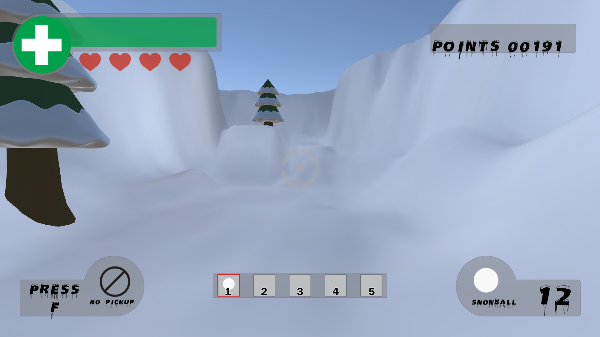
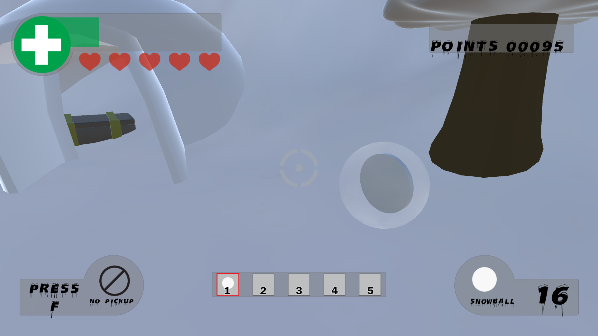
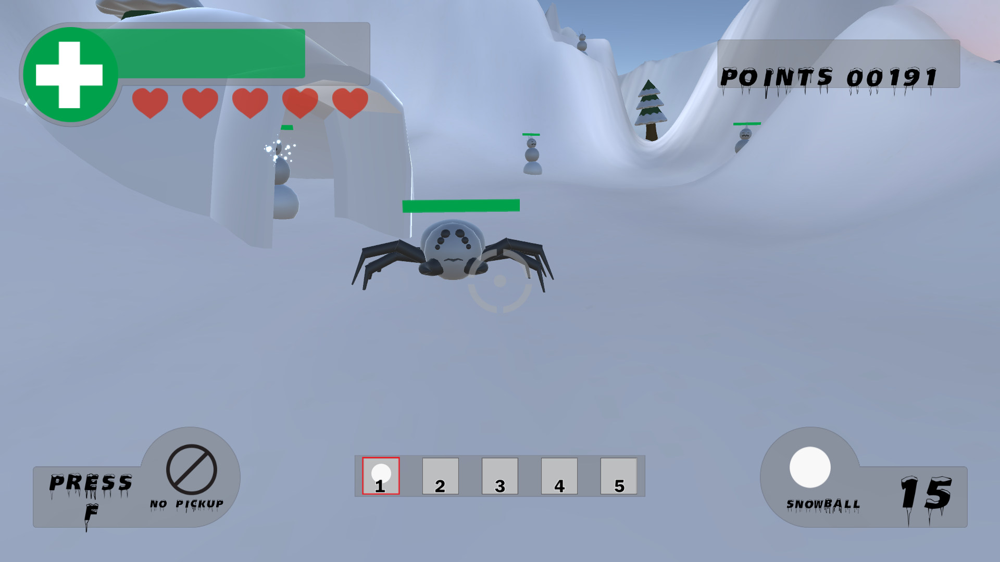

Dolphin Adventure
Dolphin Adventure is an endless runner that puts the player in control of Dexter the Dolphin. The player must take on waves and waves of enemy fish coming at them. There are multiple enemy fish to watch out for including sharks, swordfish and jellyfish traveling at the top the ocean. Points are earned by killing enemy fish.
Mechanics
Different Angles
The objective of Snowball Fight is to reach the end of the level. As you progress through the level you gain points by killing snowmen. You want to make it to end while taking as little damage as possible. Each time you lose a life, you also have points subtracted. After getting to the end of the level the player will proceed on to the next level.
Snowballs
There are quite a few different mechanics to keep in mind while playing Snowball Fight. The player has a finite ammount of snowballs. You have to use them sparingly. Each enemy base, however, has a snowball shard generator. IF you walk over the ice shard you will regain 20 snowballs. Be careful though, the shard generator has a 20 second cooldown. Special snowballs can be found from killing enemy, opening chests, or being picked up from the level.
Health

The player has a health bar that decreases as the get hit by snowballs. There are camp fires that the player can stand next to regain health. Players may also pick up consumable first aid kits that drop from enemies and treasure chests. The first aid kit can be used when the player is close to death. If a player dies they respawn at the previous enemy base they have completed. Each base has it's own spawn location. After the player dies the lose a life which is indicated by hearts on the UI.
Enemies
There are several enemy types that the player will encounter. Each enemy has it's own characteristics and properties. They throw a specific snowball type attached to the class of enemy they are. The most common enemy the player will encounter is the basic snowman. This enemy throws the basic snowball and has average health. The armored snowman that is wearing blue armor has a unique property of blocking the players snowballs when they are low on health. The snow spider is a quick little enemy that charges the player with no remorse.
Items

The world is filled with items that the player can pick up and use. Players can hold on to these items until they find it neccesary. The med-kit pick up allows the player to restore all the health they have lost instantly. It helps when the player is in trouble. Another consumable item is the Ice Shield. The Ice Shield allows the player to become invinceble for a short duration. This item comes in handy when the player encounters a more difficult enemy like the armored snowman.